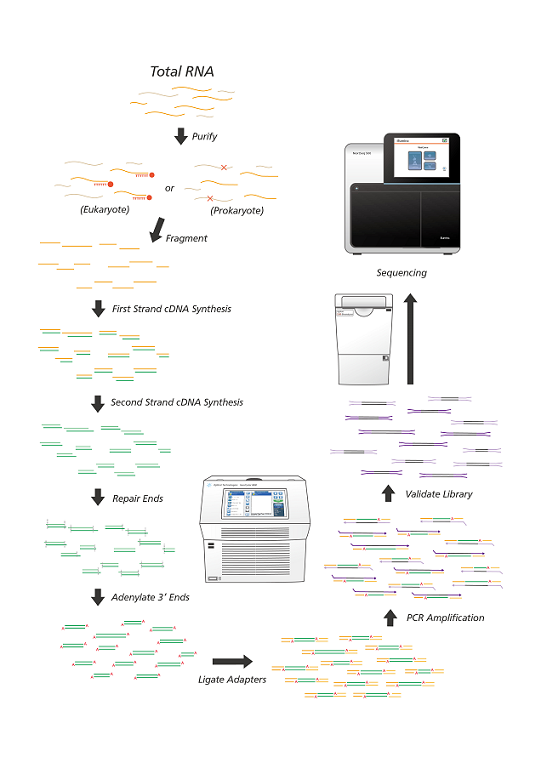

|

|
RNA Isolation
Total RNA was extracted using Trizol® Reagent (Invitrogen, USA) according to the instruction manual.
Purified RNA was quantified at OD260nm using a ND-1000 spectrophotometer (Nanodrop Technology,USA)
and qualitated by using a Bioanalyzer 2100 (Agilent Technology, USA) with RNA 6000 LabChip kit (Agilent Technology, USA).
Library Preparation & Sequencing
All RNA sample preparation procedures were carried out according to the Illumina's official protocol.
Agilent's SureSelect Strand-Specific RNA Library Preparation Kit
was used for library construction followed by AMPure XP beads (Beckman Coulter, USA) size selection.
The sequence was determined using Illumina's sequencing-by-synthesis (SBS) technology (Illumina, USA).
Sequencing data (FASTQ reads) were generated using Welgene Biotech's pipeline based on Illumina's basecalling program bcl2fastq v2.20. |